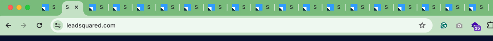
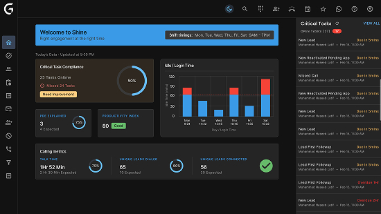
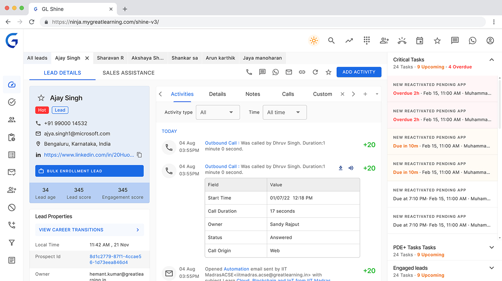
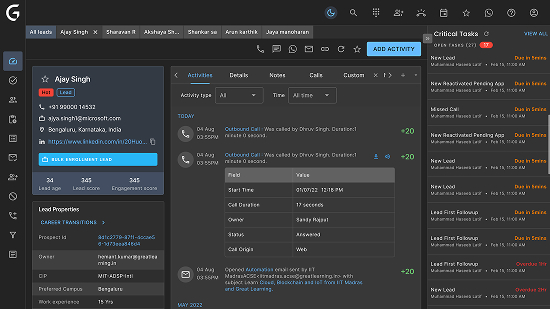
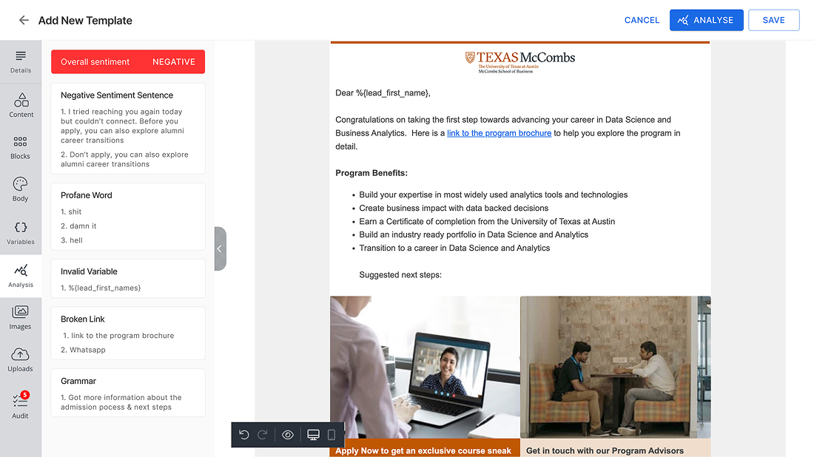
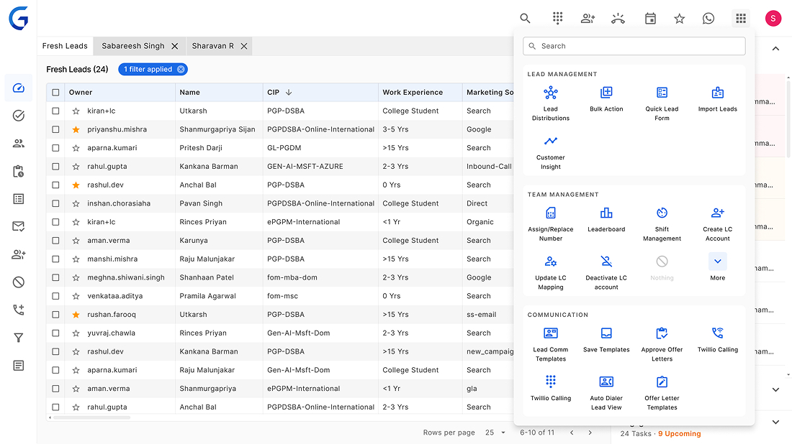
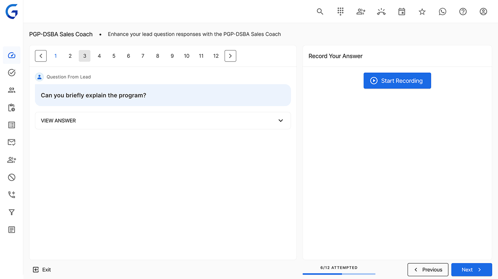
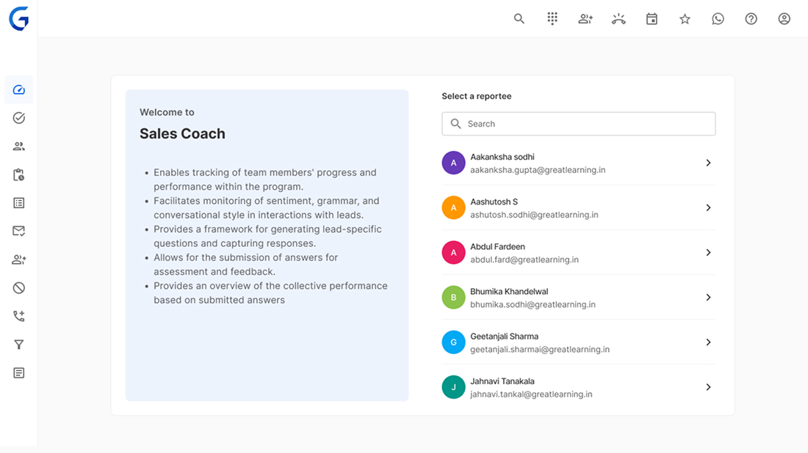
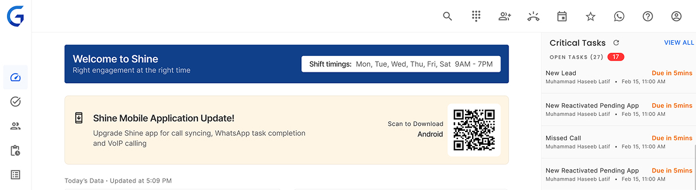

GL Shine
Increasing Ops Efficiency through Product & Automation
The goal of this project
The aim of this project is to reorient towards optimising sales performance by harmonising SOP compliance with enrolment goals, improving lead management efficiency, and enhancing overall effectiveness through a new product.
This upgraded platform should integrate essential input metrics, ensure clear visibility, and provide actionable insights to enhance decision-making at all levels within the sales team
My Role in this project
As a lead UX designer, my role involved identifying critical problem areas and understanding why previous solutions were ineffective. It's worth noting that there were two previous unsuccessful attempts by other teams to build this system. The primary objective was to pinpoint the gaps and establish new UX goals for the upcoming project.
- Research & Discovery
Understand project requirements, goals, audience, and trends.
- Ideation & Conceptualisation
Generate ideas, create sketches, and explore possibilities.
- Design Development
Refine concepts, create mockups, and iterate based on feedback.
- Feedback & Iteration
Gather stakeholder and user feedback for improvements.
- Finalisation & Delivery
Polish designs and prepare for implementation/presentation.
User Research
During this exercise, I had the opportunity to engage with approximately 30 Learning Consultants (LCs), as well as 4-5 managers and 2-3 Business Unit (BU) heads. The research methodology encompassed a combination of qualitative and quantitative approaches to gather comprehensive insights. While I am unable to disclose specific data due to non-disclosure agreements (NDAs), I can highlight some key findings from the research:
SOP Compliance Challenges:
LCs and managers expressed difficulties in consistently adhering to Standard Operating Procedures (SOPs), citing various operational hurdles and conflicting priorities.
Enrollment vs. SOP Focus
There was a noticeable trend where LCs, managers, and BU heads tended to prioritize enrollment and monthly targets over strict SOP compliance, leading to a disconnect between enforcement and achievement of SOP objectives.
Lead Prioritisation
LCs emphasised the importance of lead prioritisation based on factors such as marketing sources, engagement scores, and their own intuition, often resorting to manual methods like spreadsheets for tracking and conversion efforts.
Tool Integration Challenges
Existing tools like LeadSquared were being used alongside GL Shine, but there were challenges in integrating these tools seamlessly into daily workflows, leading to inefficiencies and reduced standardisation.
UX and Workflow Improvements
Feedback highlighted the need for a unified platform (GL Shine v3) that not only optimises key sales metrics but also provides clear visibility, actionable insights, and user-friendly workflows for LCs, managers, and BU heads.
💡 Key Highlight
A significant factor contributing to the failure of previous versions is the rigidity within the product, which limited or only partially allowed Learning Consultants (LCs) to make decisions based on their discretion.
These insights were instrumental in shaping the new UX goals and design direction for the upcoming project iteration. The focus is now on creating a platform that aligns SOP compliance with enrolment goals, enhances lead management efficiency, and ultimately drives better sales performance.
Design Strategy
The aim of this project is to reorient towards optimising sales performance by harmonising SOP compliance with enrolment goals, improving lead management efficiency, and enhancing overall effectiveness through a new product.
This upgraded platform should integrate essential input metrics, ensure clear visibility, and provide actionable insights to enhance decision-making at all levels within the sales team
Goal
The goal of this design strategy is to create a user-centric platform that empowers Learning Consultants (LCs) to make informed decisions, streamline their workflows, and improve overall sales performance.
Target Audiance
The primary target audience includes Learning Consultants (LCs), Managers, Sales Leaders, and Business Unit (BU) heads involved in sales operations. The platform aims to cater to their specific needs, challenges, and priorities within the sales environment.
General Tasks
- Enable LCs to prioritise leads effectively based on various criteria such as marketing sources, engagement scores, and past performance.
- Streamline SOP compliance tasks without compromising on the autonomy of LCs to make decisions aligned with enrolment goals.
- Provide clear visibility of key metrics related to lead conversion, daily activities, and team performance for managers and leaders.
- Offer actionable insights and suggestions to help improve sales performance, efficiency, and standardisation across the sales team.
Tech Constraints
Through our research, I discovered that Learning Consultants (LCs) are provided with low-end laptops equipped with basic trackpads, and many of them prefer not to use a mouse. Therefore, it's important to pay attention to scroll-based interactions, particularly horizontal scrolls. LCs also prefer viewing more data on a single screen due to the nature of their work, which often leads to a tendency to adopt a sovereign posture. To accommodate these preferences and behaviours, I opted for a design approach that uses minimal colours, smaller fonts, and denser data presentation.

Another aspect to consider in terms of tools and integrations is LeadSquared, which posed challenges in UX. One significant issue was that it would open a separate tab after some time, resulting in Learning Consultants (LCs) having numerous tabs open in their browser, sometimes up to 20-30 tabs. To address this, I decided to introduce a similar in-tab interaction to support viewing multiple leads and prevent the proliferation of browser tabs. LeadSquard was eleminiated in 2 phases.
Design and Implementation
For the design and implementation phase, we have opted to leverage the MUI (Material-UI) library. This decision was influenced by our previous insights into user preferences and behaviors. One of the key considerations is the introduction of both light and dark themes to cater to the diverse needs of our users, particularly the night shift employees who require a dark theme to enhance productivity during nighttime usage.
The use of the MUI library provides us with a robust set of UI components and styling options that align with modern design principles and accessibility standards. By incorporating dark theme support, we aim to improve user experience, reduce eye strain, and promote usability, especially in low-light environments. This also helped us to increase the productivity of the engineering.
During the implementation phase, we will focus on seamless integration of the MUI components, ensuring consistency in design elements across different screens and functionalities. The dark theme will be carefully designed to maintain readability, contrast, and visual hierarchy, while also offering a visually appealing and cohesive user interface.
Additionally, conducted user testing and gathered feedback to refine and iterate on the design and implementation of both light and dark themes, ensuring that they meet the needs and preferences of our target audience effectively.








Delivery and Post delivery activities
Due to time constraints, I wasn't able to conduct a formal usability study before the release. Instead, I, along with other product team members, observed numerous LCs (Learning Consultants) on the floor while they were using the product. This observation led to the identification of several areas for improvement, which we promptly addressed.
We collaborated with the training and onboarding team to enhance their training processes. Subsequently, we added additional training capabilities to Shine. These efforts resulted in significant cost savings for the organisation, reducing tool spending by almost 50 crore annually. Additionally, LCs' productivity saw a notable increase of 50-80%, depending on the team and tasks, with SOP compliance reaching 85%. The overall satisfaction rating from the floor was an impressive 4.65 out of 5.
This success instilled confidence in us to introduce further productivity enhancements, such as auto-dials, email management, SMS management, and auditing capabilities utilising AI technology. The project was deemed a huge success both from a business perspective and in terms of user satisfaction on the floor.
👏 Thanks a ton, Team! Our journey from product conception to implementation was like riding a rollercoaster, full of twists and turns. Despite not having the luxury of a formal usability study, our 'on-the-floor' observations and quick tweaks worked wonders. Your dedication and adaptability saved us millions and boosted productivity beyond expectations. Cheers to our quirky and successful ride together!
Let’s Work Together
Open to roles where I can drive impact through thoughtful design and clean code.